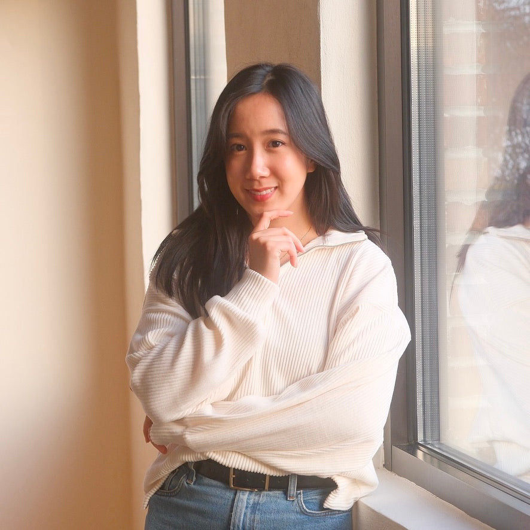
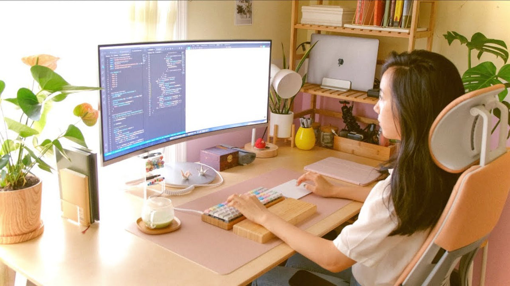
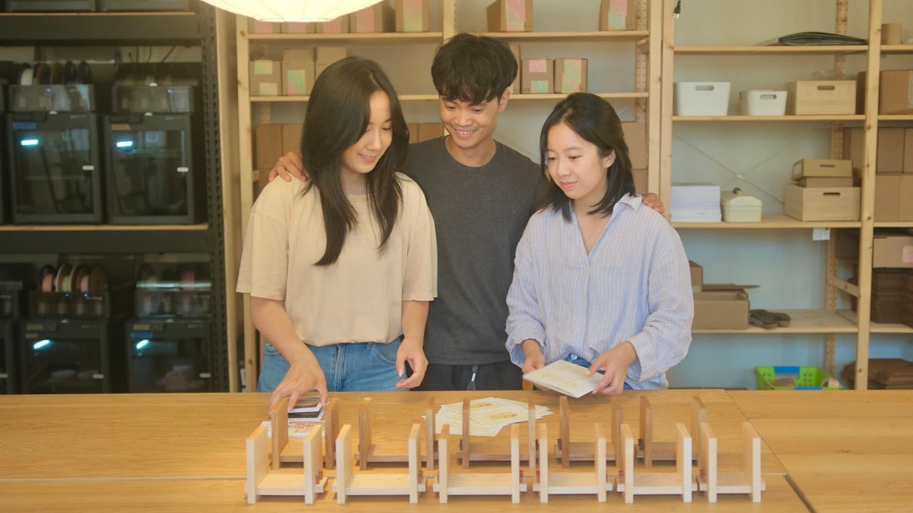
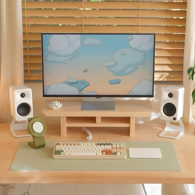
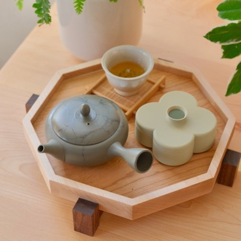
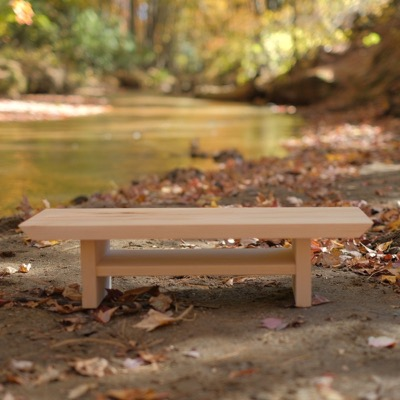

Watch

Designer · Creator · Founder of Cozyleigh Studios
I design calm, warm spaces and the everyday pieces that live in them, and I share it all on YouTube, so you can make a space that feels like you. Making life warm again, one design at a time.
My story
In 2020 I was a front-end software engineer, working from home. Most tech videos back then were black, white and very masculine, so I filmed my desk the way I wanted it: bright, warm and cozy. Nearly two million people watched it, and some of the kindest comments came from women in tech, glad they weren’t alone.

Not long after, I quit my job to do YouTube full time and make something of my own. Nothing out there felt like us, so my family and I started making our own pieces.
That became Cozyleigh Studios. I still lead the design of every piece, and I try to have fun at every step, even the tedious ones nobody sees.
Read our story so far →Highlights
Swipe for more
What I believe
What people tell me
“You have such a great gift of bringing calm and warmth to us all.”A viewer learning to code
“I think it’s so important that the world starts seeing that developers are not only men coding in the dark in hoodies.”A front-end developer
“This video is the reason why I chose to study IT in the university!!”A YouTube viewer

Today
Desk mats, MagSafe charger stands, trays and solid-wood pieces, made by hand in our own studio. Tristan builds them to last, Ashleigh brings the color and art, and I set how each one should feel.
Visit the shop Meet the family →Watch
Things I use
Everything I reach for every day, in one place.

My desk
Tea & matcha
My homeWork with me
I say yes to a few projects each year that fit a slow, cozy desk and the way we make things.
Email me hello@cozyleigh.studio Building my personal website2021 · 756K views
Building my personal website2021 · 756K views